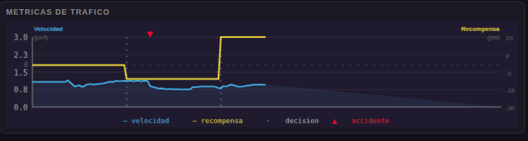
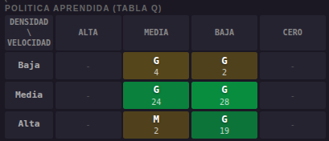

Aprendizaje por Refuerzo aplicado a la deteccion de accidentes en autopistas
El Aprendizaje por Refuerzo (RL) es un paradigma de inteligencia artificial donde un agente aprende a tomar decisiones mediante la interaccion con un entorno. A diferencia de los sistemas supervisados, el agente no recibe ejemplos etiquetados: explora, actua, y recibe recompensas o castigos segun el resultado de sus acciones.
El objetivo del agente es descubrir una politica, una estrategia que indique que accion tomar en cada situacion, que maximice la recompensa acumulada a lo largo del tiempo.
El agente es el Centro de Control que observa la autopista. Aprende que ante un accidente debe despachar una grua (+20 pts), y que durante el enfriamiento conviene desviar el trafico (+5 pts).
Q-Learning es un algoritmo de aprendizaje por refuerzo libre de modelo: el agente no necesita conocer la dinamica del entorno, solo experimentarlo. Mantiene una Tabla Q que asigna un valor numerico a cada par (estado, accion).
En cada paso, el agente actualiza la tabla usando la ecuacion de Bellman:
Pasa el cursor sobre cada tarjeta para ver el ejemplo en el simulador.
| Situacion | Accion | Tipo | Rec. |
|---|---|---|---|
| Accidente + grua lista | Grua | Resuelve | +20 |
| Accidente + grua cooldown | Desviar | Mitiga | +5 |
| Accidente + grua lista | Desviar | Mitiga | +2 |
| Trafico fluido | Mantener | Normal | +1 |
| Accidente + grua cooldown | Grua | Error | -5 |
| Sin accidente | Desviar / Grua | Error | -10 |
| Accidente | Ignorar | Critico | -30 |
La siguiente captura muestra al agente ya entrenado enfrentando un accidente. Al identificar el estado critico, despacha la grua y obtiene una recompensa de +20. La velocidad se recupera en los segundos siguientes.

El mapa de calor muestra el aprendizaje: celdas grises al inicio, verdes al converger. Las celdas de velocidad cero aprenden a usar la grua (+20) y el desvio (+5) segun la disponibilidad.
